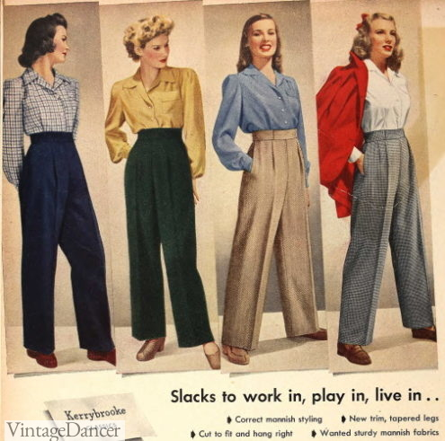
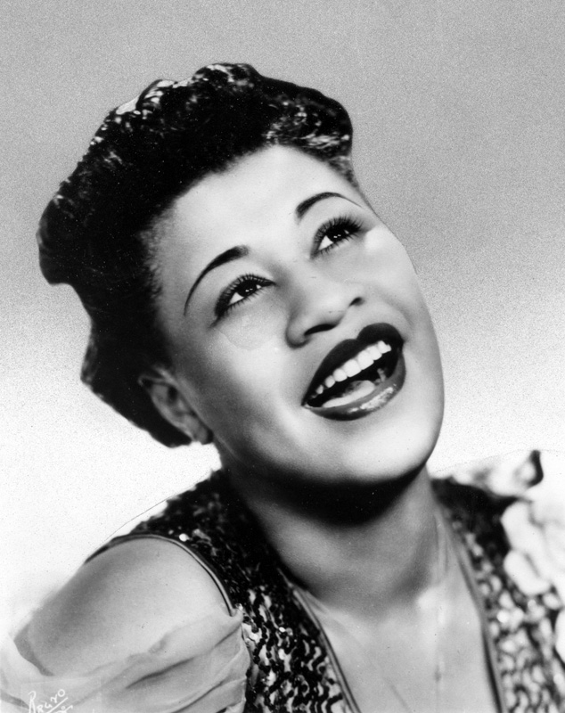
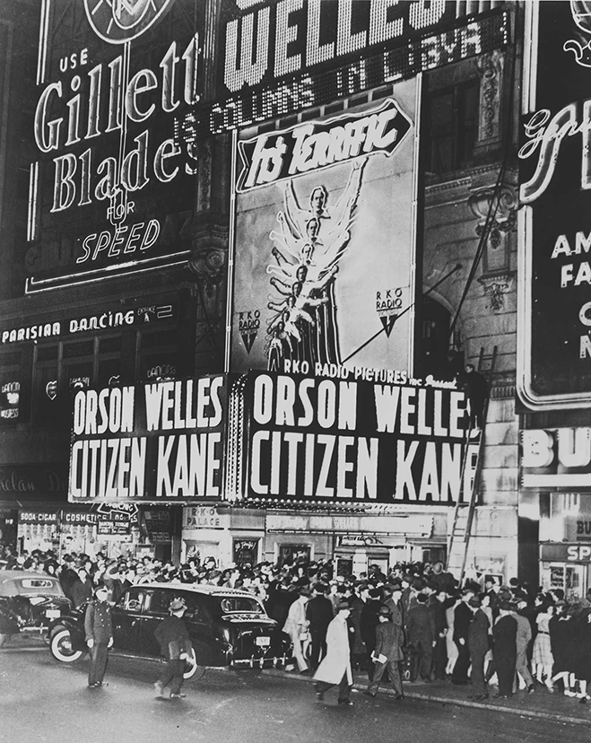

What's Buzzin', Counsin?
A look at trends in the 1940s
Fashion

"Pants or trousers were primarily a menswear item up until the 1940s. Women working in factories needed safe clothing that wouldn’t snag in machinery. At first, women just wore men’s pants. Later manufactures made pants for women..."VintageDancer.com
Music

Ella Fitzgerald, Frank Sinatra, and Thelonious Monk were some of the most popular musicians during this time
Movies

Orson Welles, Alfred Hitchcock, and Preston Surges debuted many classics in this era